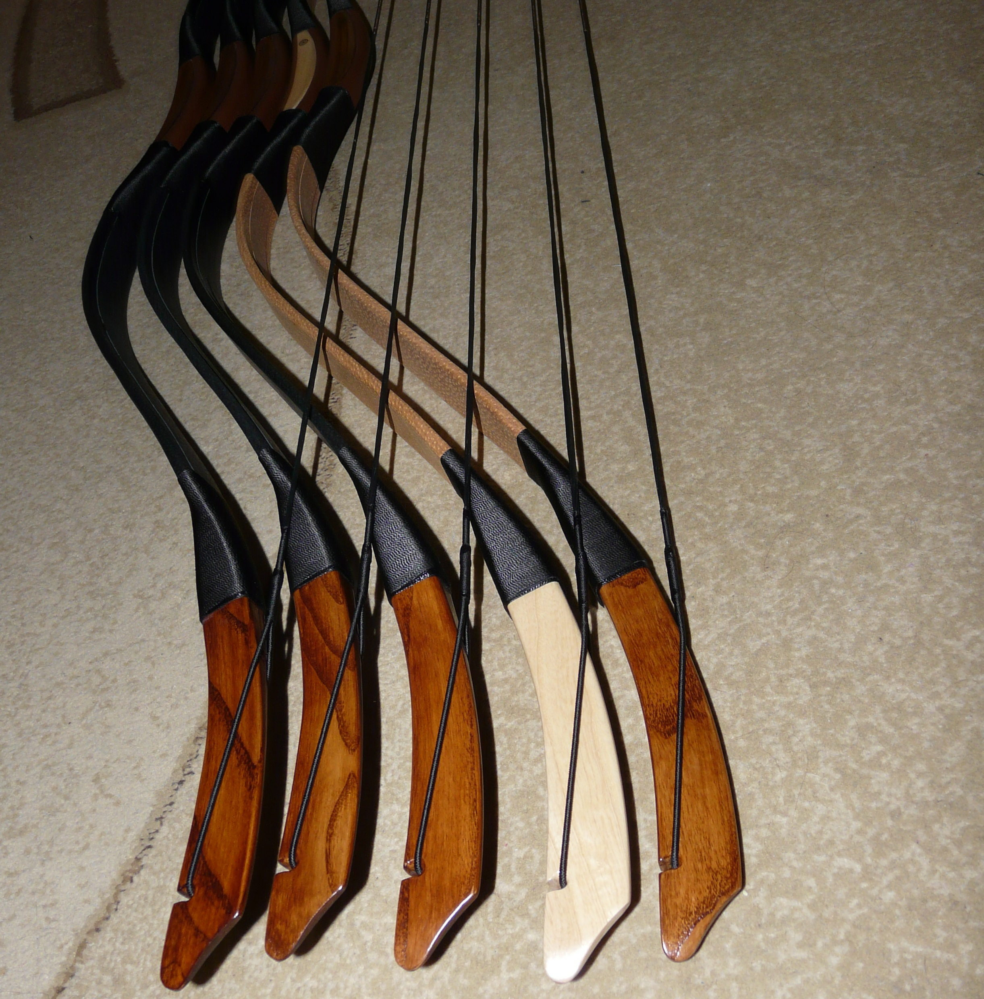
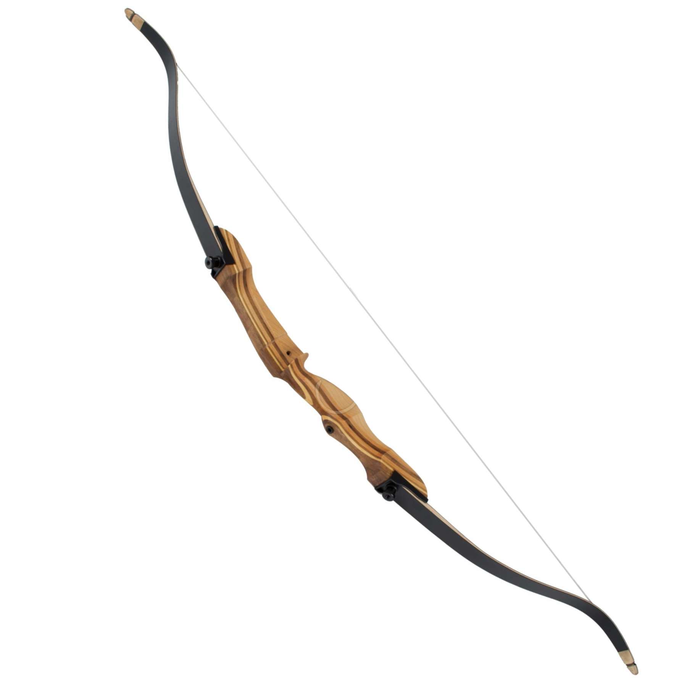
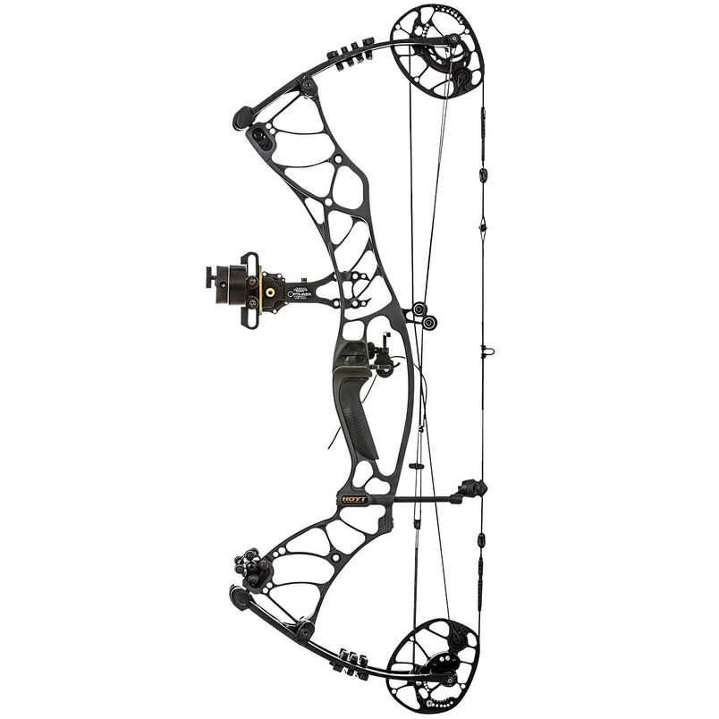

Típusok

Tradicionális íjak
A honfoglalás kori (és annál is korábbi) magyarok a sztyeppei népekhez hasonlóan, életmódjukból fakadóan kiváló lovasíjászok voltak. Ezt tanúsítja a híres középkori fohász is: „A magyarok nyilaitól ments meg, Uram, minket!”. Visszacsapó íjakat használtak. Az íjászat az államalapítás után sem tűnt el Magyarországról. Mindig is voltak könnyűlovas egységek, akik ezt a harcmodort folytatták, például a székelyek és kunok. Az íj egészen a végvári harcok idejéig használatban maradt.

Sportreflex íjak
Az olimpiai reflexíjak a viszonylag egyszerű összbenyomás ellenére, – köszönhetően az állandóan fejlődő technikának – igen korszerű sporteszközök. A jobb minőségűek középrésze általában alumíniumból, néha magnéziumból készül. Működésének lényege a két reflex megfeszítése által keltett energia leadása. Ellentétben a csigás íjakkal, itt az energia tárolására semmiféle technikai „huncutságra” nem számíthatunk, itt kizárólag az íjat megfeszítő íjász fizikai és mentális felkészültségének függvénye a várható eredmény az oldás után.

Csigás íjak
A csigás íj a 20. század második felében jelent meg, és gyorsan népszerűvé vált a sportíjászok körében. Ez az íjtípus egy komplex mechanizmust használ, amely csigákat és kábeleket tartalmaz, hogy növelje a húzóerőt és csökkentse a szükséges erőkifejtést az oldás során. A csigás íjak lehetővé teszik a pontosabb célzást és nagyobb távolságokat, így ideálisak versenyeken és vadászaton egyaránt.